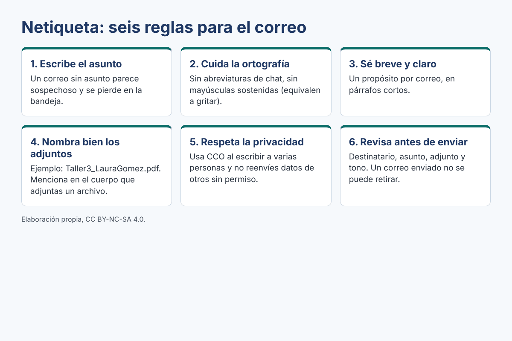

Netiqueta: normas de cortesía en la red
La netiqueta es el conjunto de normas de cortesía y respeto para comunicarse en internet. Aplicarla protege tu imagen y la de los demás.

Archivos adjuntos y seguridad básica
Cómo adjuntar un archivo
- Guarda el archivo con un nombre claro:
Taller3_LauraGomez.pdf. - En tu correo, haz clic en el ícono del clip («Adjuntar archivos») y selecciónalo.
- Espera a que termine de cargar antes de enviar.
- Menciona en el cuerpo del mensaje que adjuntas un archivo y qué contiene.
Seguridad básica
- No abras adjuntos ni enlaces de remitentes que no conoces.
- Desconfía de mensajes que piden tu contraseña o datos personales con urgencia: es una señal de suplantación (phishing).
- Cierra tu sesión al usar un computador compartido.
- Usa una contraseña larga y no la compartas.
Para estudiar sin conexión: descarga la guía en PDF que aparece a continuación. Contiene la estructura del correo, las reglas de netiqueta y una plantilla para tu correo.